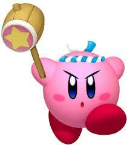

Kirby, la bolita rosa de Nintendo, ha conquistado corazones desde su
debut en Game Boy.
Cronología Detallada: La Evolución de la saga a lo largo del tiempo
1992: Kirby's Dream Land (Game Boy)
El primer juego de Kirby, diseñado por Masahiro Sakurai, fue
concebido como un título sencillo y accesible para Game Boy. Aunque
inicialmente se llamó "Popopo", Shigeru Miyamoto decidió cambiarlo a
Kirby. Aquí se establecieron las bases: la capacidad de volar y
tragar enemigos, aunque las habilidades de copia aún no existían.
1993: Kirby's Adventure (NES)
Considerado por muchos como el verdadero punto de partida de la
esencia de Kirby, esta entrega para NES introdujo por primera vez
las icónicas Copy Abilities. Al tragar enemigos específicos, Kirby
podía adoptar sus poderes y usarlos para resolver puzles o derrotar
a otros adversarios, multiplicando las posibilidades de juego.
1996: Kirby Super Star (SNES)
Este título es una recopilación de ocho juegos más pequeños, cada
uno con un estilo de juego diferente, desde plataformas
tradicionales hasta carreras y luchas de jefes. Introdujo el sistema
de ayuda, donde Kirby podía convertir a los enemigos en aliados
controlados por la IA o un segundo jugador, añadiendo una capa
cooperativa.
2004: Kirby & The Amazing Mirror (Game Boy Advance)
Este título fue un experimento clave en la estructura de la saga,
llevando la acción a un género más de "metroidvania" o exploración
de mundo abierto. En lugar de niveles lineales, Kirby exploraba un
gran espejo interconectado. Además, introdujo la mecánica de los
"Kirbys clonados", ya que Kirby se dividía en cuatro copias de
diferentes colores, un precursor de las mecánicas cooperativas
futuras.
2010: Kirby's Epic Yarn (Wii)
Kirby's Epic Yarn marcó un cambio estético radical: todo el mundo,
incluyendo a Kirby, está hecho de hilos y tela. En este título,
Kirby no puede aspirar o copiar poderes de forma tradicional. En su
lugar, utiliza su cuerpo de hilo para transformarse en objetos
(coches, submarinos, paracaídas) y agarrar el entorno. Fue un
enfoque innovador centrado en el diseño de niveles y el cooperativo.
2011: Kirby's Return to Dream Land (Wii)
Tras la experimentación de Epic Yarn, este título significó el
regreso triunfal de Kirby a las plataformas 2D tradicionales y a las
Copy Abilities. El juego se centró fuertemente en el multijugador
cooperativo local para hasta cuatro jugadores, permitiendo a los
amigos jugar como Kirby, Meta Knight, Rey Dedede o Waddle Dee.
2016: Kirby: Planet Robobot (Nintendo 3DS)
Este título es notable por introducir la Armadura Robobot, una
poderosa armadura robótica que Kirby puede pilotar. Al igual que
Kirby, la Armadura podía escanear y copiar las habilidades de los
enemigos, transformándose en distintas variantes (Modo Sierra, Modo
Jet, etc.). Esta nueva capa de jugabilidad a través de la Armadura
fue fundamental para resolver puzles y batallas de jefes a mayor
escala.
2018: Kirby Star Allies (Nintendo Switch)
Kirby Star Allies marcó el debut de la saga en HD en Nintendo
Switch. El juego perfeccionó y expandió el multijugador cooperativo
introducido en Return to Dream Land mediante la mecánica de Amigos
Estrella. Kirby lanza corazones a los enemigos para convertirlos en
aliados controlados por la IA o por otros jugadores (hasta cuatro).
2022: Kirby y la Tierra Olvidada (Nintendo Switch)
Marcando un hito en la franquicia, "Kirby y la Tierra Olvidada"
supuso el salto completo de la saga a las 3D. Ambientado en un mundo
postapocalíptico lleno de ruinas de una civilización olvidada, el
juego introdujo el ingenioso "Modo Transmorfo", permitiendo a Kirby
engullir objetos grandes (como coches o máquinas expendedoras) para
obtener nuevas habilidades.
Las Habilidades de Copia más Emblemáticas
La esencia de Kirby reside en su capacidad para absorber y copiar.
Despliega cada habilidad para ver su origen y su principal uso.
Habilidad Espada
Introducida en Kirby's Adventure (1993), inspirada en Link.
Esta es la habilidad de combate más clásica y recurrente. Permite a
Kirby usar una espada para realizar ataques rápidos, cortantes y
aéreos.
Movimientos Clave:
Tajo Aéreo: Un movimiento
de salto que proyecta una onda de energía a distancia.
Ataque Cargado: Un giro de
espada continuo y potente que ofrece defensa mientras se ataca,
similar al movimiento de Link.
Corte Bajo: Un tajo rápido
para enemigos pequeños o para cortar hierba.
Combinación de Elementos: En títulos recientes, puede fusionarse con otros elementos para
crear una Espada de Fuego o Espada de Hielo.
Diferenciación: A
diferencia del Martillo, prioriza la velocidad y el alcance por
encima del daño bruto.
Habilidad Fuego
Permite a Kirby escupir llamas o transformarse en una bola de
fuego.
La habilidad Fuego es ideal para destruir obstáculos helados y
atacar a múltiples enemigos en línea recta. A menudo le otorga a
Kirby un casco en forma de antorcha, y es una de las primeras
habilidades que se pueden obtener en la mayoría de los juegos.
Usos clave y propiedades :
Destrucción Ambiental: esencial para derretir bloques de hielo y encender mechas o
bombas.
Escupir Llamas: Ataque
estándar de corto alcance.
Bola de Fuego: Transformación de movimiento rápido e invulnerabilidad temporal
(Kirby envuelto en fuego).
Elemento de Combinación: Puede fusionarse con otras habilidades (ej. Fuego + Espada =
Espada de Fuego).
Habilidad Bomba
Una habilidad de lanzamiento esencial para destruir bloques y
enemigos a distancia.
La habilidad Bomba permite a Kirby generar y lanzar pequeñas bombas
que explotan tras unos segundos o al impactar. Es uno de los poderes
más útiles para el combate a distancia y es vital para resolver
puzles que requieren destruir paredes frágiles o activar
interruptores lejanos.
Movimientos Clave y Versatilidad:
Lanzamiento Estándar: Permite lanzar la bomba hacia adelante, causando daño de área.
Ataque Cargado: En títulos
recientes, Kirby puede rodar las bombas por el suelo o lanzarlas
con más fuerza.
Destrucción de Obstáculos: Es la habilidad preferida para destruir bloques que requieren un
explosivo, especialmente los que se encuentran en lugares de
difícil acceso.
Uso Estratégico: Requiere
una ligera planificación, ya que la bomba tiene un temporizador
antes de la explosión.
Habilidad Martillo

Habilidad de fuerza bruta, asociada a menudo al Rey Dedede.
El Martillo es la habilidad de mayor fuerza física de Kirby. Permite
realizar golpes lentos pero extremadamente potentes, ideales para
romper bloques especiales o derrotar a jefes con gran daño. En
muchos juegos, también permite cargar el martillo para un golpe aún
más devastador.
Movimientos Clave y Usos:
Golpe Poderoso: Ataque
terrestre lento, el más fuerte de todas las habilidades.
Martillo Giratorio: Gira
el martillo sobre la cabeza para crear un escudo temporal.
Uso en Puzles: Necesario
para activar interruptores o hundir pilares de gran tamaño.
Habilidad Sueño
Una habilidad de descanso, a menudo utilizada para recuperar
salud.
La habilidad Sueño es peculiar porque su efecto primario es que
Kirby se duerma al instante y se despierte a los pocos segundos.
Esto lo deja vulnerable, pero en la mayoría de los juegos le otorga
una pequeña y valiosa recuperación de salud.
Usos Clave y Contexto:
Recuperación de Salud Limitada: Uso principal en todos los títulos.
Ataque Sorpresa: En
algunos juegos, aliados o variaciones del Sueño pueden
contraatacar al despertar.
Función de Reseteo: Útil
para deshacerse rápidamente de una habilidad no deseada y absorber
otra nueva.
Elemento de Humor: Su
función es principalmente cómica y suele encontrarse en lugares
inofensivos.
Jefes Emblemáticos
La saga Kirby esconde algunas de las batallas más épicas contra jefes
increíbles y variados.
Whispy Woods
El primer jefe y el más recurrente de toda la saga, un árbol
gigante que lanza manzanas.
Whispy Woods es el primer jefe de la historia de Kirby (Kirby's
Dream Land, 1992) y el enemigo menos intimidante, apareciendo como
el guardián de los bosques de Dream Land en casi todos los juegos.
Rol en la saga:
Actúa como jefe tutorial o "calentamiento" en la mayoría de los
títulos.
Su concepto ha evolucionado en variantes más grandes y complejas.
Kracko
El jefe basado en el clima, una nube eléctrica que desafía a Kirby
en el cielo.
Kracko es la entidad de nube y rayos, otro jefe recurrente desde el
primer juego, conocido por sus combates en el cielo que exigen
aprovechar bien el vuelo y los ataques a distancia.
Aportaciones al Juego:
Jefe principal que aparece en muchos títulos de plataformas de
Kirby.
Fomenta el uso de habilidades eléctricas o proyectiles para
atacarlo desde lejos.
Marx
El antagonista principal de Kirby Super Star y uno de los villanos
más icónicos por su traición.
Marx es el gran traidor de la saga, antagonista principal de Kirby
Super Star, que engaña a Kirby para poder hacerse con un poder
cósmico y conquistar Pop Star.
Impacto en la Saga:
Representa el salto hacia villanos más complejos y carismáticos en
la serie.
Su aspecto y patrones de ataque lo han convertido en un jefe
inolvidable y muy popular.
Secretos y Curiosidades de Kirby
El Origen y el Nombre de Kirby
Concepción: Kirby fue creado por Masahiro Sakurai como un
personaje placeholder para las primeras fases de desarrollo de
Kirby's Dream Land. Era un simple "puffball" temporal.
El nombre "Kirby": Hay dos teorías principales. Una es que fue
nombrado en honor a John Kirby, el abogado que defendió a Nintendo
en la demanda de Universal Studios por Donkey Kong. La otra es que
Shigeru Miyamoto simplemente pensó que sonaba "lindo y suave".
Color original: En su debut en Kirby's Dream Land (Game Boy),
Kirby era blanco en la carátula americana, mientras que en Japón
era rosa. Miyamoto lo quería rosa, pero Sakurai lo veía amarillo.
Al final, el rosa prevaleció.
Habilidades y Lore Inesperado
¿Quién es Kirby realmente?: A pesar de su apariencia adorable,
Kirby es un ser de un poder cósmico inmenso, capaz de derrotar a
dioses y entidades interdimensionales. Es, sin duda, uno de los
héroes más poderosos de Nintendo.
Meta Knight y Galacta Knight: El misterioso espadachín Meta Knight
es de la misma especie que Kirby, lo que se insinúa por su
apariencia similar y su habilidad para volar. Galacta Knight es
una entidad aún más poderosa, vista como una deidad en el universo
Kirby.
La comida es su motivación: Gran parte de los conflictos en Dream
Land suelen comenzar porque el Rey Dedede roba la comida de los
habitantes (o Kirby simplemente tiene hambre). Es una motivación
sencilla pero efectiva para sus aventuras.